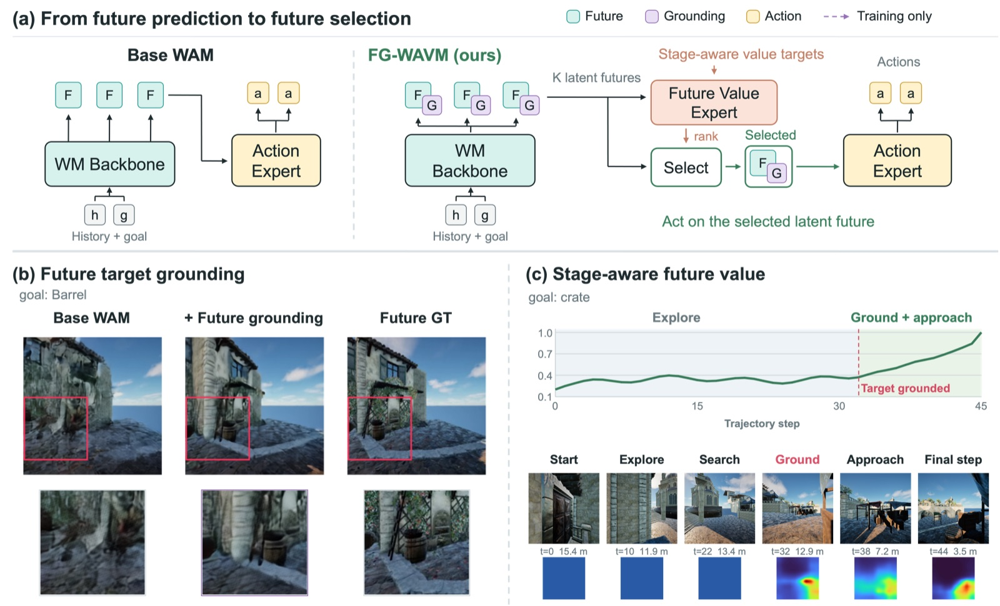
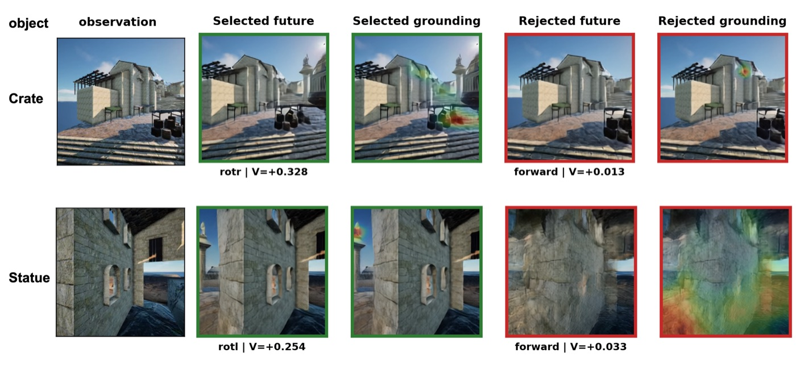

Language-goal aerial object navigation requires an unmanned aerial vehicle (UAV) to find a target object specified by a language description and stop when it is observed. Unlike aerial vision-language navigation, which follows step-by-step route instructions, the agent must search a large 3D environment on its own. World-action models (WAMs) have made strong progress on aerial VLN, but applying them to language-goal aerial object navigation faces two challenges: predicted futures may miss the target, and sparse task feedback does not indicate which future is worth acting on. To address these challenges, we propose FG-WVAM, a World-Value-Action Model with Future Target Grounding. It has three components: a world model, a Future Value Expert, and an Action Expert. (1) To preserve target information, the world model predicts visual futures and target heatmaps for each candidate, supervised by a frozen Grounding DINO teacher and weighted toward target regions. (2) To learn task value despite sparse feedback, the Future Value Expert scores each candidate using stage-aware exploration/approach labels. (3) The Action Expert generates actions from the selected candidate's visual, grounding, and value states. At inference, multiple imagined futures are scored and the highest-scoring one drives the action. On UAV-ON and AerialDoJo, FG-WVAM improves SR by 12.3 and 10.2 points over the strongest evaluated aerial WAM baseline.

The world model jointly predicts future visual latents and target grounding tokens. A frozen Grounding DINO teacher supplies target annotations from ground-truth future frames during training only.
Before discovery, a bounded exploration score combines motion, rotation, and grounding-confidence change. After discovery, value is normalized distance progress from the discovery frame.
At each decision, K latent futures are generated and scored once. The selected candidate's visual, grounding, and value states enter the Action Expert through cross-attention.
Same-scene evaluation, mean over three runs. See the paper for unseen scenes, standard deviations, and ablations.
| Method | UAV-ON | AerialDojo | ||||||
|---|---|---|---|---|---|---|---|---|
| SR ↑ | OSR ↑ | SPL ↑ | DTS ↓ | SR ↑ | OSR ↑ | SPL ↑ | DTS ↓ | |
| AeroAct | 25.0 | 33.2 | 15.6 | 36.5 | 18.6 | 29.1 | 13.6 | 13.4 |
| FG-WVAM | 37.3 | 42.9 | 23.7 | 27.3 | 28.8 | 34.4 | 17.8 | 11.8 |

The anonymous code release contains the training pipeline, the Grounding DINO label generator, the stage-aware value annotator, the four training stages, and the serving path with K-candidate value selection. The UAV-ON and AerialDojo datasets, the LTX-Video weights, and the ProjectAirSim simulator are publicly available; the repository README lists where to obtain them and how to point the configs at them.
@inproceedings{anonymous2027fgwvam,
title = {World-Value-Action Model with Future Target Grounding for
Language-Goal Aerial Object Navigation},
author = {Anonymous Authors},
booktitle = {Under review at ICLR 2027},
year = {2027}
}